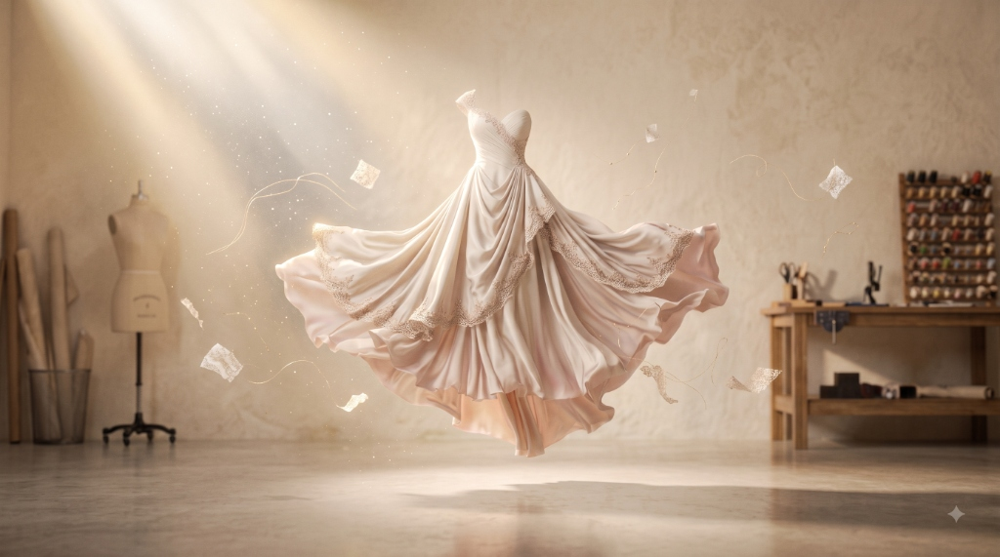
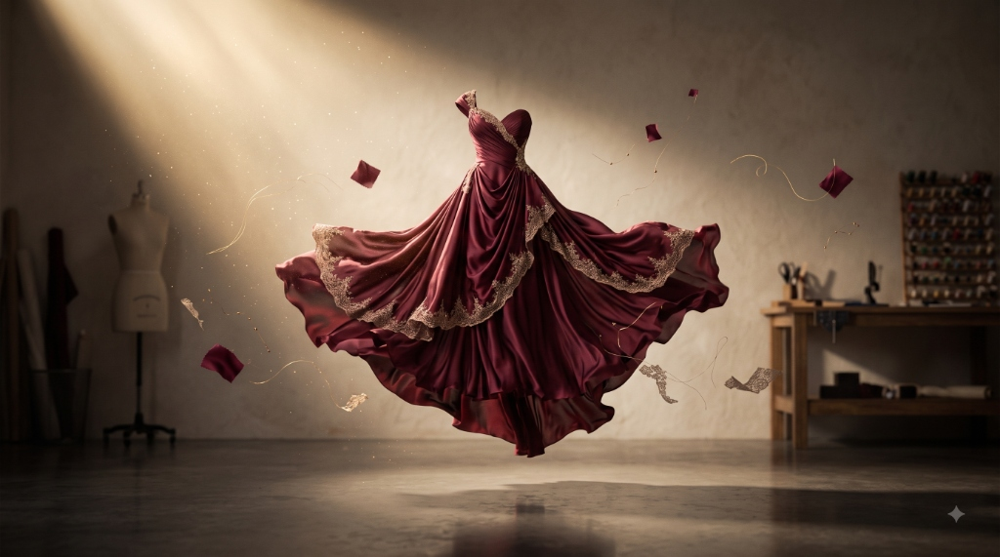
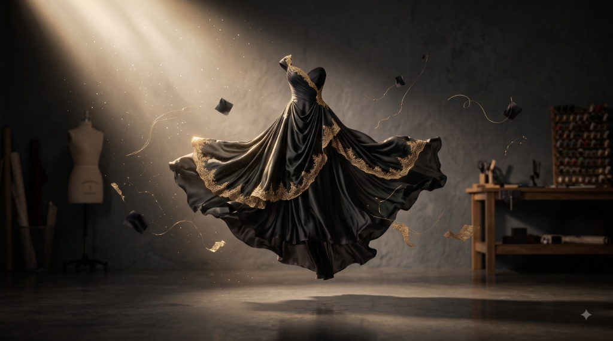
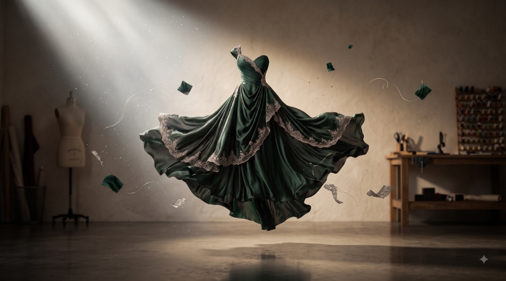
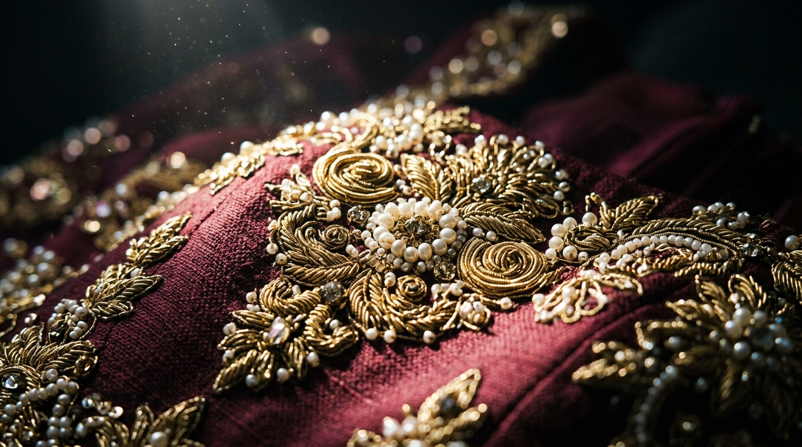

Piece No. 01
Voile
Ivory silk with blush undertones, hand-finished lace at every hem. Cut for a bride who wants to float down the aisle, not walk it.

Autumn Reverie — No. 1 Collection
Each gown is cut, draped, and hand-finished to move as if weightless — silk that answers to breath, not thread count.
Enter the AtelierA gown should not simply be worn — it should hover, a half-second behind the body, as though the fabric hasn't quite decided to land. That instant is where Atelier Lune works.
The Collection

Ivory silk with blush undertones, hand-finished lace at every hem. Cut for a bride who wants to float down the aisle, not walk it.

Black silk traced in gold thread, for the room you want to go quiet when you enter it. Our most requested evening piece.

Deep emerald with a silvered hem, drawn from the color of light through old glass. A gown for the guest who arrives last, on purpose.

The Craft
Our embroiderers trace each pattern by hand, in beadwork passed down through three ateliers before this one. A single bodice can hold eleven days of stitching before it ever meets a body.
We don't chase symmetry. Hand-laid thread drifts a little from row to row — the same imperfection that tells you a fire was built by hand, not printed by one.
What you're looking at above is not a finished dress. It's the moment before one — the last thread, still catching the light.
By Appointment
Fittings begin in the atelier, where every piece in this collection lives before it travels.
Request a Fitting